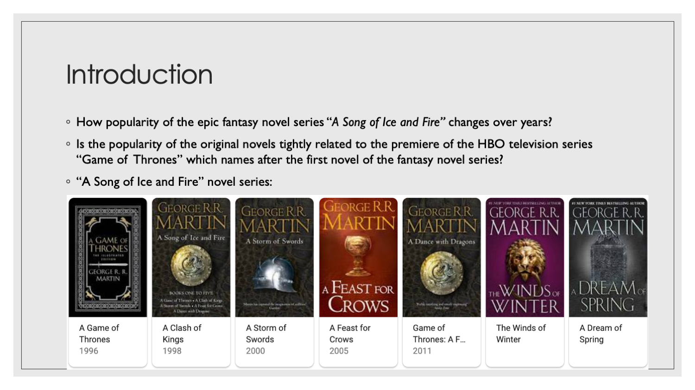
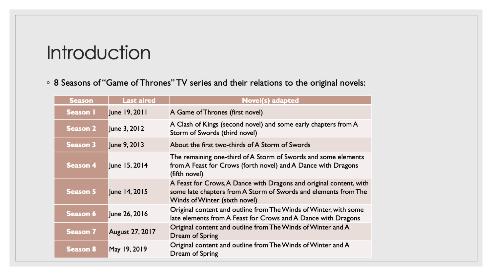
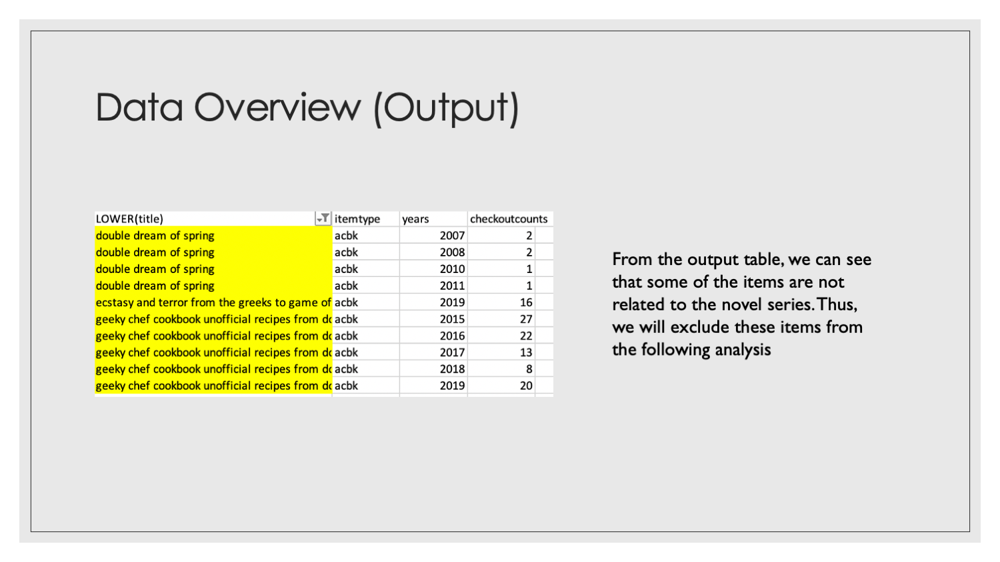
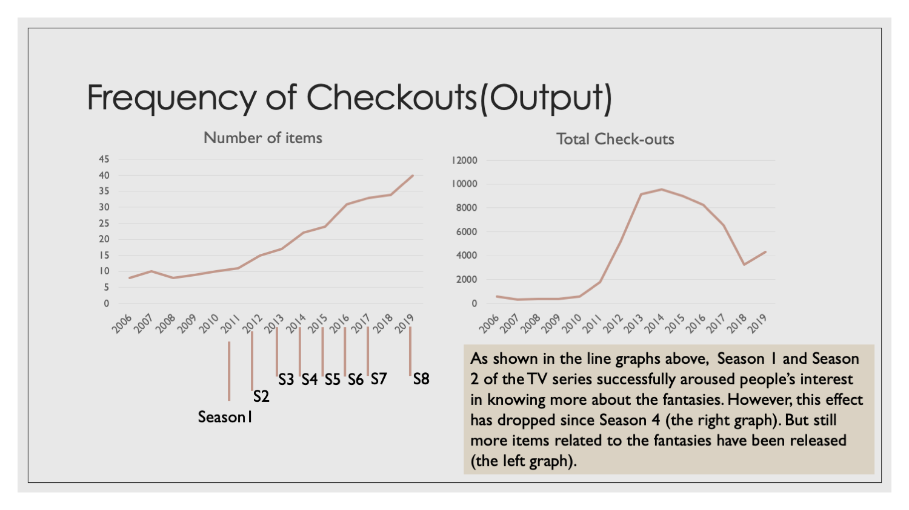
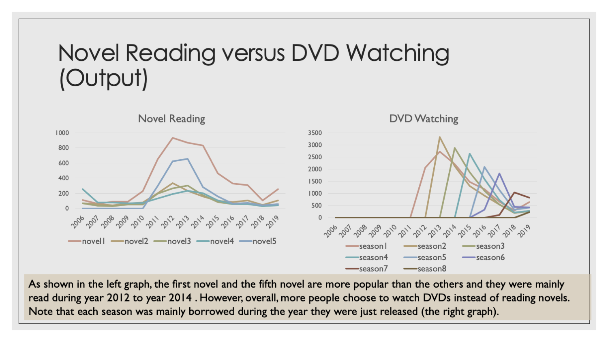
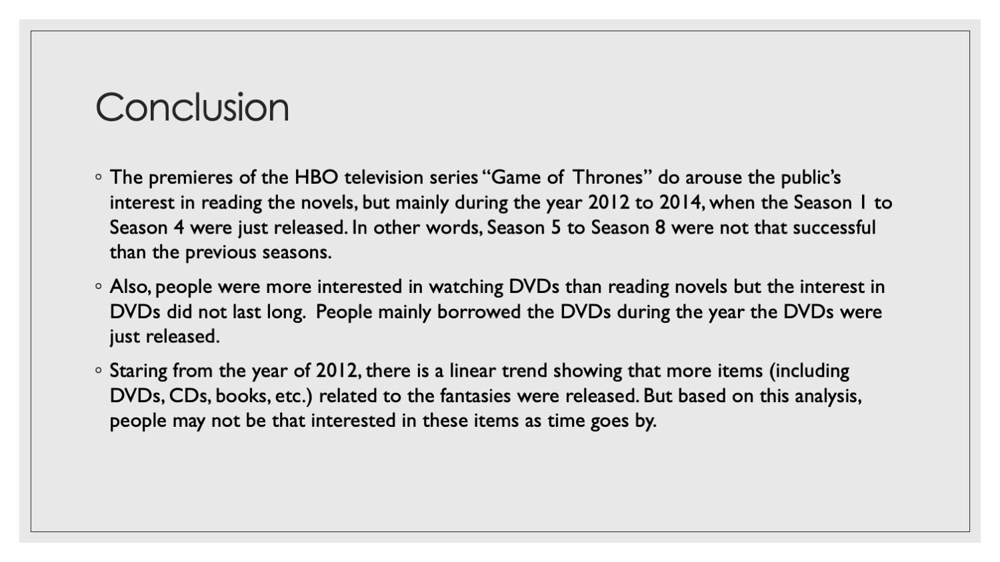

The Popularity of Game of Thrones and Its Novels
MAT 259, 2020
Chuanxiuyue(Carol) He
Concept
With the check-out records of the Seattle library, I am interested in how popularity of the epic fantasy novel series “A Song of Ice and Fire” changes over years. Moreover, the original novels became in the public eye because of the premiere of the HBO television series “Game of Thrones” which names after the first novel of the series. Thus, I believe the checkouts of the novels fluctuate as a new season of the TV series comes out. Since 2020 was just off to a start when I was doing this analysis, I only investigated the check-out records from 2006 to 2019.
Query
SELECT LOWER(title), itemtype, YEAR(cout) AS years, COUNT(title) AS checkoutcounts
FROM spl_2016.outraw WHERE (LOWER(title) LIKE '%game of thrones%')
OR LOWER(title) LIKE '%clash of kings%'
OR LOWER(title) LIKE '%storm of swords%'
OR LOWER(title) LIKE '%feast for crows%'
OR LOWER(title) LIKE '%dance with dragons%'
OR LOWER(title) LIKE '%winds of winters%'
OR LOWER(title) LIKE '%dream of spring%'
AND YEAR(cout)<2020
GROUP BY title itemtype, YEAR(cout)
ORDER BY LOWER(title), itemtype, YEAR(cout) ASC
LIMIT 500;
SELECT COUNT(DISTINCT bibNumber) AS bibNumbercount,
COUNT(LOWER(title)) AS checkouts, YEAR(cout) AS years
FROM spl_2016.outraw WHERE (LOWER(title) LIKE '%game of thrones%')
OR LOWER(title) LIKE '%clash of kings%'
OR LOWER(title) LIKE '%storm of swords%'
OR LOWER(title) LIKE '%feast for crows%'
OR LOWER(title) LIKE '%dance with dragons%'
OR LOWER(title) LIKE '%winds of winters%'
AND LOWER(title) != 'ecstasy and terror from the greeks to game of thrones'
AND LOWER(title) != 'geeky chef cookbook unofficial recipes from doctor who game of thrones harry potter and more real life recipes for your favorite fantasy food'
AND YEAR(cout)<2020
GROUP BY YEAR(cout)
LIMIT 500;
SELECT YEAR(cout) AS years, COUNT(CASE WHEN (LOWER(title) = 'game of thrones'
OR LOWER(title) = 'game of thrones the graphic novel Volume 1'
OR LOWER(title) = 'game of thrones the graphic novel Volume 2'
OR LOWER(title) = 'game of thrones the graphic novel Volume 3'
OR LOWER(title) = 'game of thrones the graphic novel Volume 4') THEN 1 END) AS novel1,
COUNT(CASE WHEN (LOWER(title) = 'clash of kings'
OR LOWER(title) = 'clash of kings the graphic novel Volume 1'
OR LOWER(title) = 'clash of kings the graphic novel Volume 2'
OR LOWER(title) = 'clash of kings book two of A song of ice and fire') THEN 1 END) AS novel2,
COUNT(CASE WHEN LOWER(title) = 'storm of swords' THEN 1 END) AS novel3,
COUNT(CASE WHEN LOWER(title) = 'feast for crows' THEN 1 END) AS novel4,
COUNT(CASE WHEN LOWER(title) = 'dance with dragons' THEN 1 END) AS novel5
FROM spl_2016.outraw WHERE itemtype = 'acbk' AND YEAR(cout)<2020,
GROUP BY YEAR(cout) LIMIT 500;
SELECT YEAR(cout) AS years, COUNT(CASE WHEN (LOWER(title) = 'game of thrones the complete first season') THEN 1END) AS season1,
COUNT(CASE WHEN (LOWER(title) = 'game of thrones the complete second season') THEN 1 END) AS season2,
COUNT(CASE WHEN LOWER(title) = 'game of thrones the complete third season' THEN 1 END) AS season3,
COUNT(CASE WHEN LOWER(title) = 'game of thrones the complete fourth season' THEN 1 END) AS season4,
COUNT(CASE WHEN LOWER(title) = 'game of thrones the complete fifth season' THEN 1 END) AS season5,
COUNT(CASE WHEN LOWER(title) = 'game of thrones the complete sixth season' THEN 1 END) AS season6,
COUNT(CASE WHEN LOWER(title) = 'game of thrones the complete seventh season' THEN 1 END) AS season7,
COUNT(CASE WHEN LOWER(title) = 'game of thrones the complete eighth season' THEN 1 END) AS season8
FROM spl_2016.outraw WHERE itemtype = 'acdvd' AND YEAR(cout) < 2020
GROUP BY YEAR(cout) LIMIT 500;
Preliminary sketches
The TV series “Game of Thrones” are adapted from different novels of “A song of Ice and Fire”.


Process
I first checked the list of all items related to "A Song of Ice and Fire" including all books and DVDs.
From the output table, the book “Greeky chef cookbook” was included because the food it introduces is similar to the food in Game of thrones. However, this book is not directly related to the fantacies themselves. Thus, we excluded these kinds of book in the following analysis.


Final result
Here is the final output related to the popularity of DVDs and novels related to "A Song of Ice and Fire".


Code